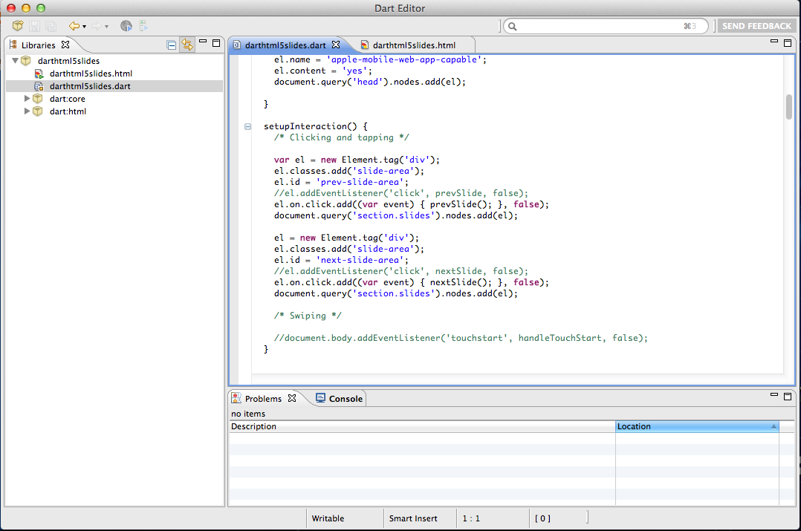
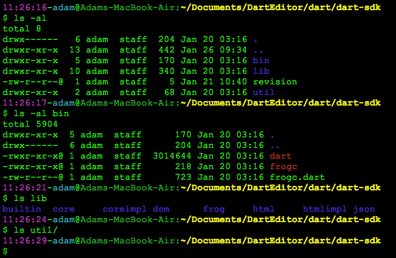
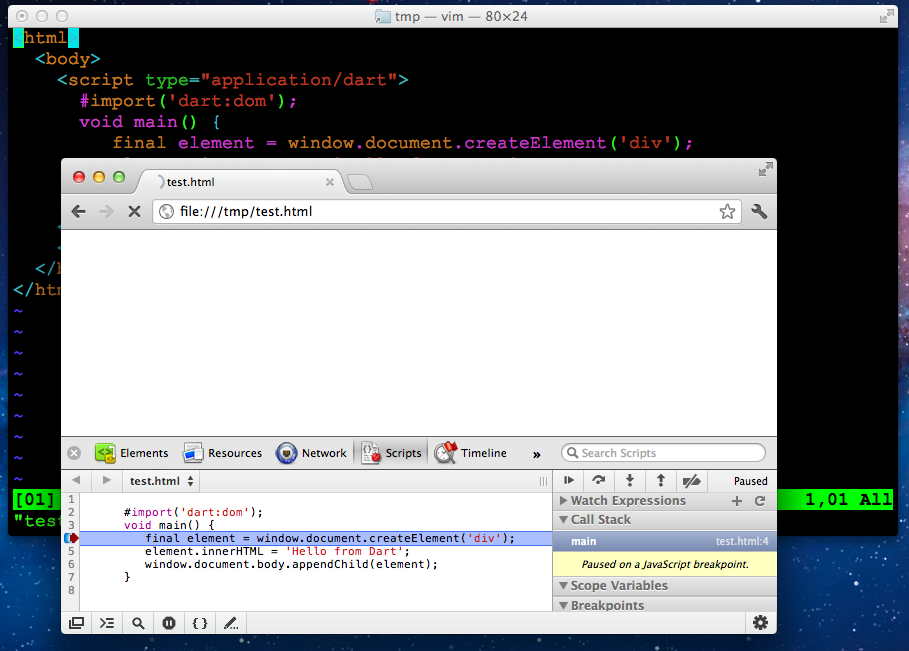

Adam
Jan 28, 2012
Darting Life
Who am I
- By day a developer always in need for tools to make life easier
- By night a developer who loves learning new technologies that google provides
What is Dart?
- A new programming language for structured web programming
- A new set of programming tools
- A new google open source project
- A new way to make web developers life better (also focused on backend developers)
- A ultra-fast startup with predictable performance
- A platform with backwards compatibility
What Dart is Not?
- An esoteric language which only few can fully understand and utilize
- An attempt to lock you in or dictate what you do
Who is the Dart Team?
- Joshua Bloch
- Gilad Bracha
- Lars Bak
- Peter von der Ahe
- Bob Nystrom
- Seth Ladd
- Jim Hugunin
- Eli Brandt
- Kasper Lund
- Florian Loitsch
- Kathy Walrath
- And more...
New languages are scary, but not this one!
- Familiar and natural, yet new
- Lightweight feel of a scripting language
- Static typing when you need the rigor
A simple OO language, yet powerful
- Class-based single inheritance with interfaces
- Optional static types
- Real lexical scoping (block, method, param, class, lib)
- Single threaded, Actor-based concurrency
- Sane Syntactic sugar
- "Coming from C#, Dart feels natural"
- "Likely to appeal to Java and JS developers"
A classic Shape/Rectangle/Square example
interface Shape {
perimeter(); // return type optional
}
class Rectangle implements Shape {
final num height, width;
// Compact constructor syntax
Rectangle(num this.height, num this.width);
// Terse function syntax
perimeter() => 2*height + 2*width;
}
class Square extends Rectangle {
Square(num size) : super(size, size);
}
main() {
var p = new Square(5).perimeter(); // dynamic type
print('Perimeter=$p'); // String interpolation
}
DartEditor

Dart SDK

Dartium

In the past, the type checker always won, it was like Roman Law: 'Guilty until proven innocent'. With the Dart type-checker you are innocent until proven guilty
This of course drives some people to almost homicidal levels of anger, but they just need to view this as something else. This is not a conventional static type system.
Preserving order is important for your sanity
dart:dom vs dart:html
- dart:dom is for low level access to DOM
- dart:html high level abstraction, similar to JQuery
var drawSpeed = 10101;
HTMLInputElement drawSpeedInput;
drawSpeedInput = document.getElementById('drawSpeedInput');
drawSpeedInput.onchange = (Event e) {
drawSpeed = drawSpeedInput.valueAsNumber;
};el = new Element.tag('div');
el.classes.add('slide-area');
el.id = 'next-slide-area';
el.on.click.add((var event) { nextSlide(); }, false);
document.query('section.slides').nodes.add(el);dart:html style & attributes
ImageElement _img = new Element.html('<img/>');
_img.attributes['src'] = img.src;
_img.attributes['width'] = sw;
_img.attributes['height'] = sh;
_img.attributes['id'] = 'zoom';
_img.style.margin = (long_side/2).toString()+'px '+(985/2).toString()+'px';
_img.style.opacity = "0";
_img.on.click.add((var event) {
popdown();
});Importing library with prefix
#import('../CaesarCipher/CaesarCipher.dart', prefix:"Caesar");
#import('../XORCipher/XORCipher.dart', prefix:"XOR");
void main() {
String s = "HELLOWORLD";
print("${s}");
s = XOR.EncryptDecrypt(s);
print("After encrypt XOR ${s}");
s = XOR.EncryptDecrypt(s);
print("After decrypt XOR ${s}");
s = Caesar.EncryptDecrypt(s, true);
print("After encrypt Caesar ${s}");
s = Caesar.EncryptDecrypt(s, false);
print("After decrypt Caesar ${s}");
}
Throwing Darts
XMLHttpRequest connect() {
var _xmlHttpRequest = new XMLHttpRequest();
_xmlHttpRequest.on.error.add((var event) {
_print('on error: '+event);
});
_xmlHttpRequest.on.abort.add((var event) {
_print('on abort: '+event);
});
return _xmlHttpRequest;
}
// Basic http methods
getHttp(var uri) {
XMLHttpRequest c = connect();
c.open('GET', uri, false);
c.setRequestHeader('Accept', 'application/json');
c.send();
return c.responseText;
}
Going DartVM
copy([var args]) {
File src = new File(arg[1]);
File dest = new File(arg[2]);
var srcStream = src.openInputStream();
var destStream = dest.openOutputStream();
destStream.write(srcStream.read());
srcStream.close();
destStream.close();
}
Unit Testing
testFormat() {
bool testData;
// Initialize the data to be tested.
setUpData() {
testData = false;
}
// A collection of unit tests
group('Test Group Name', () {
// Define a test
test('Test Name 1', () {
setUpData();
// Test some data
Expect.isFalse(testData);
testData = true;
Expect.isTrue(testData);
});
// Define another test
test('Test Name 2', () {
setUpData();
// Test some data
Expect.isTrue(testData);
});
});
}
Using fillStyle on Canvas
draw() {
var rectSize=25;
var ctx = document.query('canvas').getContext('2d');
for (var i=0;i<6;i++){
for (var j=0;j<6;j++){
ctx.fillStyle = 'rgb(' + (255-42.5*i).floor().toString() + ',' +
(255-42.5*j).floor().toString() + ',0)';
ctx.fillRect(j*25,i*25,25,25);
}
}
}
HTree draw()
drawLine() {
if (drawLineIndex < lines.length) {
context.beginPath();
context.moveTo(lines[drawLineIndex].x0, lines[drawLineIndex].y0);
context.lineTo(lines[drawLineIndex].x1, lines[drawLineIndex].y1);
context.stroke();
drawLineIndex++;
}
else {
drawLineIndex = 0;
lines.clear();
window.clearInterval(intervalId);
stopStartButton.disabled = false;
}
}
Dart Resources
Thank you!